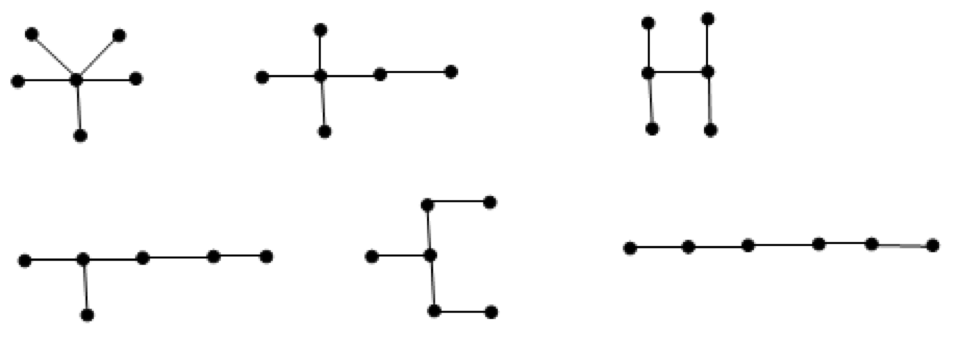

Dan drew seven graphs on the board, each of which is a tree with six vertices. Prove that among them there are two which are isomorphic.
It is easy to verify that there are only 6 different trees with six vertices $($ see Fig.$)$. 